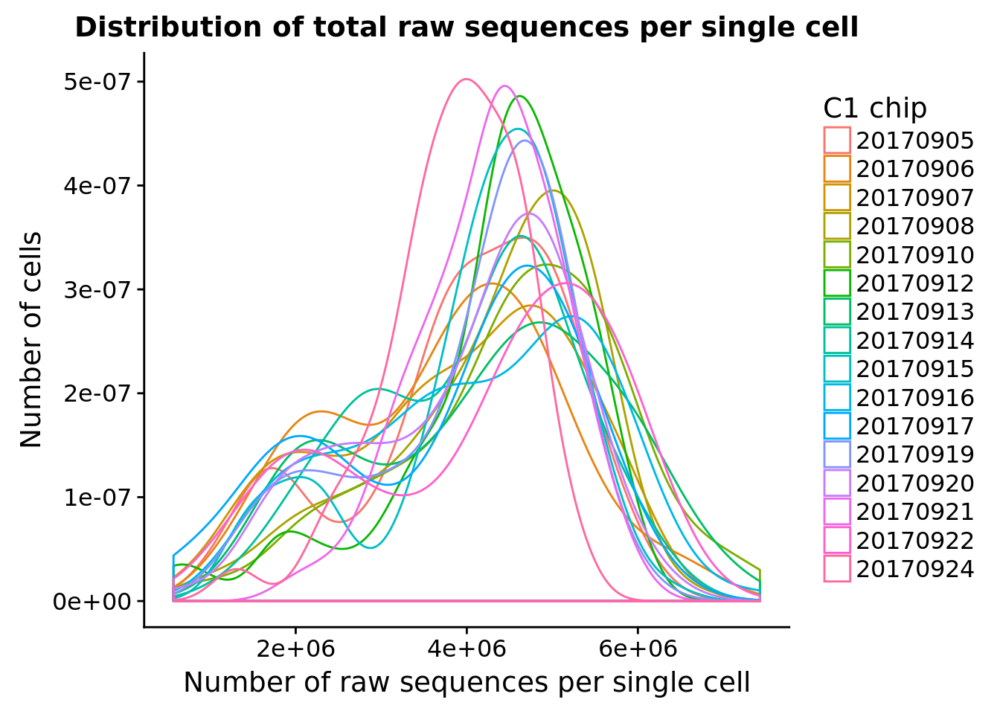

Sequencing depth per C1 chip
John Blischak
2017-11-28
Last updated: 2018-02-06
Code version: fd3bf7b
Setup
library("dplyr")
library("DT")
library("ggplot2")
library("reshape2")
library("Biobase")
theme_set(cowplot::theme_cowplot())fname <- Sys.glob("../data/eset/*.rds")
eset <- Reduce(combine, Map(readRDS, fname))
pData(eset)$experiment <- as.factor(pData(eset)$experiment)Total sequencing depth
ggplot(pData(eset), aes(x = raw, color = experiment)) +
geom_density() +
labs(x = "Number of raw sequences per single cell", y = "Number of cells",
title = "Distribution of total raw sequences per single cell") +
scale_color_discrete(name = "C1 chip")
Mapped reads per cell
ggplot(pData(eset), aes(x = experiment, y = mapped, color = experiment)) +
geom_violin() +
geom_boxplot(alpha = .01, width = .2, position = position_dodge(width = .9)) +
labs(x = "C1 chip", y = "Number of reads",
title = "Number of mapped sequences per single cell") +
theme(legend.title = element_blank(),
axis.text.x = element_text(angle = 45, hjust = 1, vjust = 1))Sum of sequences across the 96 single cells per C1 chip.
total_per_experiment <- pData(eset) %>%
group_by(experiment) %>%
summarize(raw = sum(raw) / 10^6,
mapped = sum(mapped) / 10^6,
molecules = sum(molecules) / 10^6)
datatable(total_per_experiment,
options = list(pageLength = nrow(total_per_experiment)),
colnames = c("C1 chip", "Number of raw sequences",
"Number of mapped",
"Number of molecules"))ggplot(melt(total_per_experiment, id.vars = "experiment",
variable.name = "type", value.name = "count"),
aes(x = experiment, y = count, color = type)) +
geom_point() +
labs(title = "Sequencing depth per C1 chip",
x = "C1 chip", y = "Number of sequences") +
theme(legend.title = element_blank(),
axis.text.x = element_text(angle = 45, hjust = 1, vjust = 1))
Session information
sessionInfo()R version 3.4.1 (2017-06-30)
Platform: x86_64-pc-linux-gnu (64-bit)
Running under: Scientific Linux 7.2 (Nitrogen)
Matrix products: default
BLAS: /project2/gilad/jdblischak/miniconda3/envs/fucci-seq/lib/R/lib/libRblas.so
LAPACK: /project2/gilad/jdblischak/miniconda3/envs/fucci-seq/lib/R/lib/libRlapack.so
locale:
[1] LC_CTYPE=en_US.UTF-8 LC_NUMERIC=C
[3] LC_TIME=en_US.UTF-8 LC_COLLATE=en_US.UTF-8
[5] LC_MONETARY=en_US.UTF-8 LC_MESSAGES=en_US.UTF-8
[7] LC_PAPER=en_US.UTF-8 LC_NAME=C
[9] LC_ADDRESS=C LC_TELEPHONE=C
[11] LC_MEASUREMENT=en_US.UTF-8 LC_IDENTIFICATION=C
attached base packages:
[1] parallel methods stats graphics grDevices utils datasets
[8] base
other attached packages:
[1] bindrcpp_0.2 Biobase_2.38.0 BiocGenerics_0.24.0
[4] reshape2_1.4.2 ggplot2_2.2.1 DT_0.2
[7] dplyr_0.7.4
loaded via a namespace (and not attached):
[1] Rcpp_0.12.13 knitr_1.16 bindr_0.1 magrittr_1.5
[5] cowplot_0.9.1 munsell_0.4.3 colorspace_1.3-2 R6_2.2.0
[9] rlang_0.1.2 plyr_1.8.4 stringr_1.2.0 tools_3.4.1
[13] grid_3.4.1 gtable_0.2.0 git2r_0.19.0 htmltools_0.3.6
[17] lazyeval_0.2.0 yaml_2.1.14 rprojroot_1.2 digest_0.6.12
[21] assertthat_0.1 tibble_1.3.3 htmlwidgets_0.9 glue_1.1.1
[25] evaluate_0.10.1 rmarkdown_1.6 labeling_0.3 stringi_1.1.2
[29] compiler_3.4.1 scales_0.5.0 backports_1.0.5 jsonlite_1.4
[33] pkgconfig_2.0.1 This R Markdown site was created with workflowr